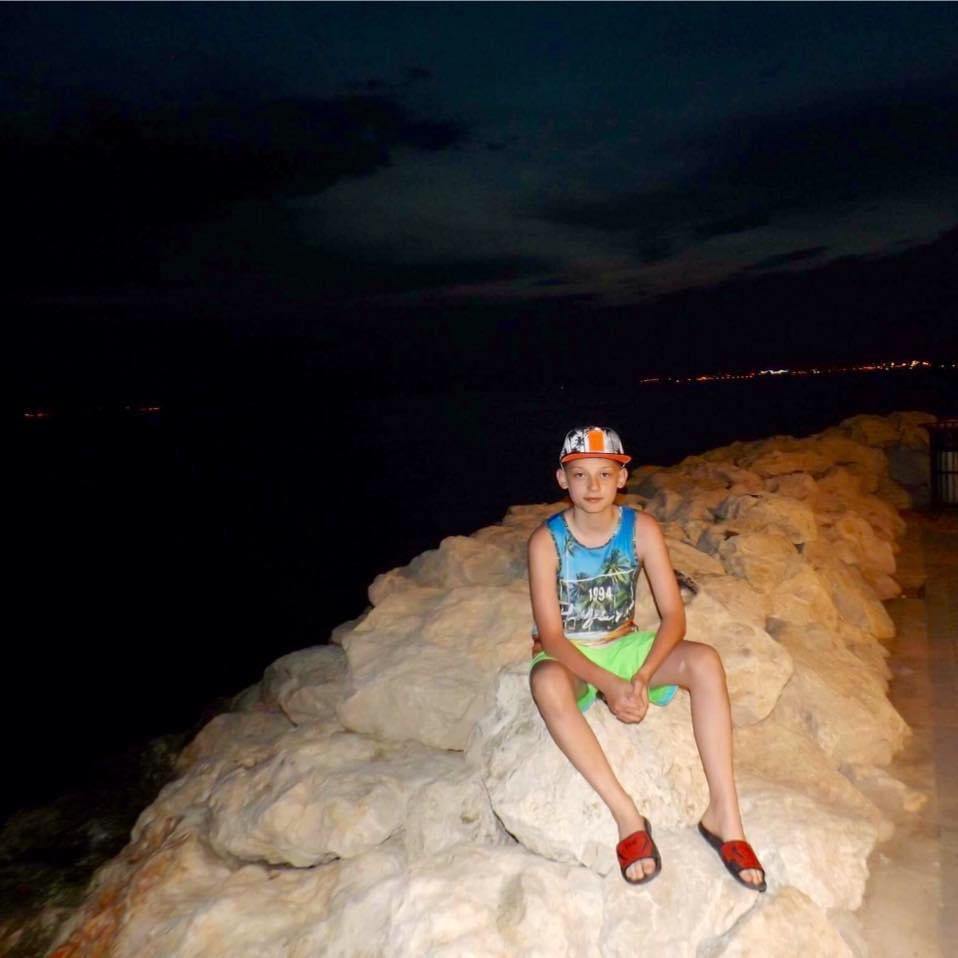
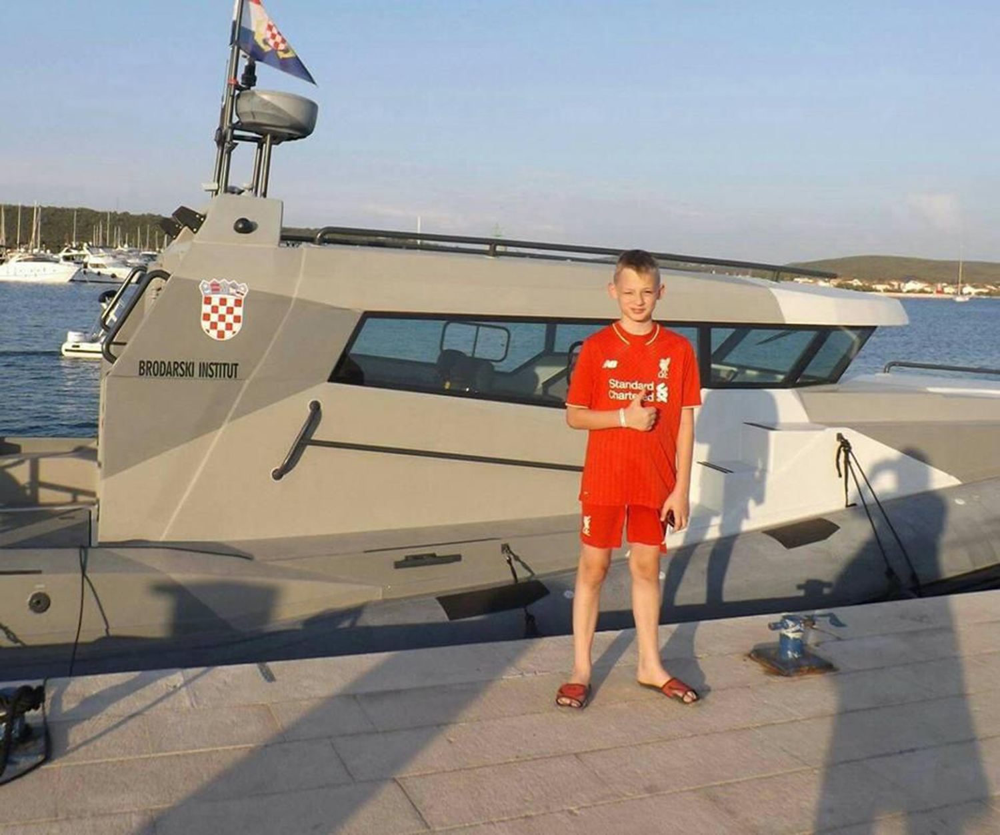
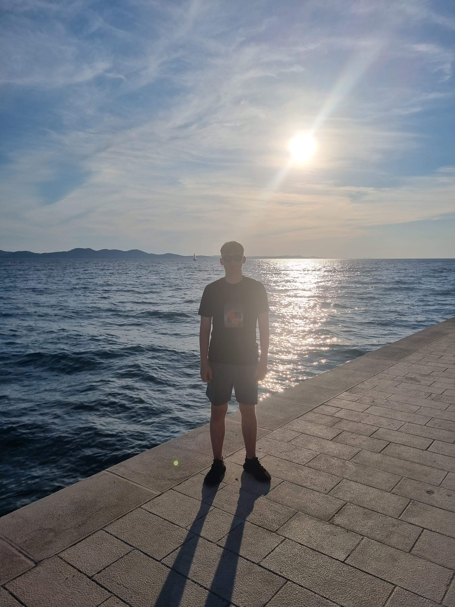
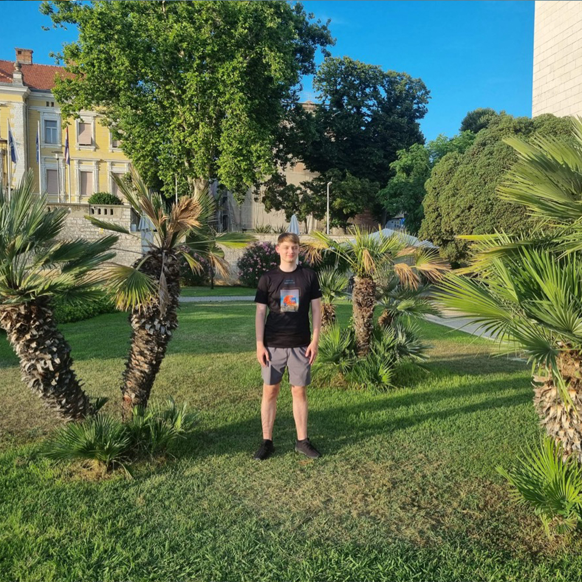

Hi there! This page serves as your passport to the sun-kissed recollections and cultural treasures of my fantastic trip to Croatia. Come along as I highlight the must-sees, undiscovered treasures, and unique local experiences that made this trip truly unforgettable. Every moment in Croatia seemed like a picture perfect postcard, whether it was strolling through ancient cities or relaxing on immaculate beaches. This is virtual postcard that offers a peek of the delicious food, stunning scenery, and friendly people that make Croatia so unique. I encourage you to browse this page and get lost in the allure of my Croatian vacation, regardless of whether you're a fellow travel enthusiast seeking ideas or someone organising your own trip there.
Every moment in Croatia seemed like a picture perfect postcard, whether it was strolling through ancient cities or relaxing on immaculate beaches. This is a virtual postcard that offers a peek of the delicious food, stunning scenery, and friendly people that make Croatia so unique.
I encourage you to browse this page and get lost in the allure of my Croatian vacation, regardless of whether you're a fellow travel enthusiast seeking ideas or someone organising your own trip there.
Timeline of Croatia
Vacations
-

2012
Zadar
At 8, Zadar was my first taste of Croatia. The sea played tunes with the quirky Sea Organ, and the old streets were full of history whispers. From the Sun Salutation's light show to the coastal charm, Zadar sparked my love for Croatia.
-

2014
Dubrovnik
In 2014, I made my second trip to Croatia and Dubrovnik was the destination. Every corner of those old streets was brimming with stories. With its alluring atmosphere and breathtaking views of the sea, Dubrovnik cemented my affection for Croatia.
-

2019
Zadar
When we returned to Zadar in 2019, the Sea Organ was playing its well-known tunes, and the old streets still resounded with history. Reviving the coastal charm that had captured my heart on my first visit when I was eight years old, the Sun Salutation's captivating light show welcomed me back. Zadar is a classic!
-

2022
Sukosan
In 2022, Sukosan turned into my most recent Croatian destination. The sea breeze was as refreshing as the vibes. Investigating the local scene was like unearthing a secret treasure in this pleasant beach town. Sukosan gave my story about Croatia a fresh perspective, enhancing its laid-back moments and exciting discoveries by the sea.
Krka Mishap
Croatia's Krka National Park is a natural wonderland with beautiful waterfalls, verdant surroundings, and a wide variety of wildlife. For those who love the outdoors and are looking for a peaceful getaway, it is a must-visit because of its stunning water features, especially the well-known Skradinski Buk. Let me now take you back to my trip to Krka, where the captivating beauty encountered an unanticipated turn.

As I immersed myself in the park's wonders, the allure of Krka's crystalline waters and vibrant greenery proved irresistible. However, amidst this natural marvel, fate took a quirky turn. A misstep on the uneven terrain resulted in a tumble, leaving me with a lasting scar on my knee. Far from overshadowing the experience, the mishap added a touch of spontaneity to my journey. The scar now serves as a tangible reminder of the day Krka's beauty, and a dash of adventure, intertwined to create a unique chapter in my Croatian exploration.